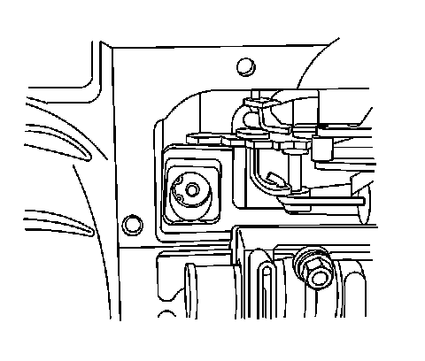
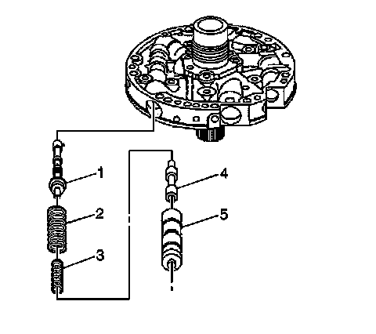

4L60-E/4L65-E/4L70-E - Automatic Transmission
Pressure Regulator Replacement (with Light Grey Case Connector)
Removal Procedure
Important: If the transmission has a black case connector, the transmission has an input speed sensor. Oil pump removal will be required.

1. Raise and support the vehicle. Refer to Lifting and Jacking the Vehicle.
2. Remove the transmission oil pan and filter.
3. Compress the reverse boost valve sleeve into the bore of the oil pump to release tension on the reverse boost valve retaining ring.
4. Remove the reverse boost valve retaining ring, then slowly release tension on the reverse boost valve sleeve.

5. Remove the reverse boost valve sleeve (5) and the reverse boost valve (4).
6. Remove the pressure regulator isolator spring (3) and the pressure regulator valve spring (2).
7. Remove the pressure regulator valve (1).
Installation Procedure
1. Install the pressure regulator valve (1).
2. Install the pressure regulator isolator spring (3) and the pressure regulator valve spring (2).
3. Install the reverse boost valve (4) in the reverse boost valve sleeve (5).
4. Install the reverse boost valve (4) and sleeve (5) in the oil pump cover.
5. Compress the reverse boost valve sleeve into the bore of the oil pump to expose the retaining ring slot.
6. Install the reverse boost valve retaining ring, then slowly release tension on the reverse boost valve sleeve.
7. Install the transmission oil filter and pan.
8. Lower the vehicle.
9. Fill the transmission to the proper level with DEXRON(R) VI transmission fluid. Refer to Transmission Fluid Checking.
Important: It is recommended that transmission adaptive pressure (TAP) information be reset.
Resetting the TAP values using a scan tool will erase all learned values in all cells. As a result, the engine control module (ECM), powertrain control module (PCM) or transmission control module (TCM) will need to relearn TAP values. Transmission performance may be affected as new TAP values are learned.
10. Reset the TAP values. Refer to Transmission Adaptive Functions (TCM).